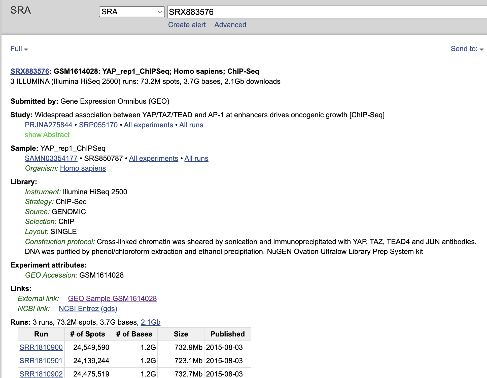
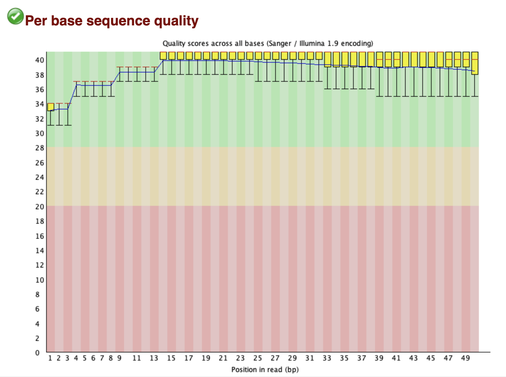

Last updated: 2025-01-04
Checks: 6 1
Knit directory:
reproduce_genomics_paper_figures/
This reproducible R Markdown analysis was created with workflowr (version 1.7.1). The Checks tab describes the reproducibility checks that were applied when the results were created. The Past versions tab lists the development history.
The R Markdown file has unstaged changes. To know which version of
the R Markdown file created these results, you’ll want to first commit
it to the Git repo. If you’re still working on the analysis, you can
ignore this warning. When you’re finished, you can run
wflow_publish to commit the R Markdown file and build the
HTML.
Great job! The global environment was empty. Objects defined in the global environment can affect the analysis in your R Markdown file in unknown ways. For reproduciblity it’s best to always run the code in an empty environment.
The command set.seed(20241226) was run prior to running
the code in the R Markdown file. Setting a seed ensures that any results
that rely on randomness, e.g. subsampling or permutations, are
reproducible.
Great job! Recording the operating system, R version, and package versions is critical for reproducibility.
Nice! There were no cached chunks for this analysis, so you can be confident that you successfully produced the results during this run.
Great job! Using relative paths to the files within your workflowr project makes it easier to run your code on other machines.
Great! You are using Git for version control. Tracking code development and connecting the code version to the results is critical for reproducibility.
The results in this page were generated with repository version 883cb56. See the Past versions tab to see a history of the changes made to the R Markdown and HTML files.
Note that you need to be careful to ensure that all relevant files for
the analysis have been committed to Git prior to generating the results
(you can use wflow_publish or
wflow_git_commit). workflowr only checks the R Markdown
file, but you know if there are other scripts or data files that it
depends on. Below is the status of the Git repository when the results
were generated:
Ignored files:
Ignored: .DS_Store
Ignored: .Rproj.user/
Ignored: analysis/.DS_Store
Ignored: data/fastq/
Ignored: data/public_data/
Ignored: data/reference/
Unstaged changes:
Modified: .gitignore
Modified: analysis/01_download_fastq_from_GEO.Rmd
Modified: analysis/08_homework.Rmd
Modified: analysis/_site.yml
Modified: analysis/about.Rmd
Note that any generated files, e.g. HTML, png, CSS, etc., are not included in this status report because it is ok for generated content to have uncommitted changes.
These are the previous versions of the repository in which changes were
made to the R Markdown
(analysis/01_download_fastq_from_GEO.Rmd) and HTML
(docs/01_download_fastq_from_GEO.html) files. If you’ve
configured a remote Git repository (see ?wflow_git_remote),
click on the hyperlinks in the table below to view the files as they
were in that past version.
| File | Version | Author | Date | Message |
|---|---|---|---|---|
| Rmd | c9a4ca2 | crazyhottommy | 2024-12-31 | version 0.1 |
| html | c9a4ca2 | crazyhottommy | 2024-12-31 | version 0.1 |
| Rmd | fb4fce6 | crazyhottommy | 2024-12-27 | preprocessing done |
| html | fb4fce6 | crazyhottommy | 2024-12-27 | preprocessing done |
We will use fastq-dl to download the fastq files from GEO.
https://github.com/rpetit3/fastq-dl/tree/master
conda create -n fastq_download -c conda-forge -c bioconda fastq-dl
conda activate fastq_download Tip, conda is very slow. use
mamba as a drop-in replacement for conda.
go to GSE page https://www.ncbi.nlm.nih.gov/geo/query/acc.cgi?acc=GSE66083 click one of the SRX sample https://www.ncbi.nlm.nih.gov/sra?term=SRX883576

The relationship of Experiment to Run is a 1-to-many relationship, or there can be many Run accessions associated with a single Experiment Accession (e.g. re-sequencing the same sample). Although in most cases, it is a 1-to-1 relationship, you can use –group-by-experiment to merge multiple runs associated with an Experiment accession into a single FASTQ file.
and we see many SRR number for the same SRX sample.
fastq-dl --accession SRX883576 --group-by-experiment
Real bioinformatics problem
I could not install fastq-dl on my mac because my mac
has a M3 chip and sra-tools is not compatible with it.
Platform: osx-arm64
Collecting package metadata (repodata.json): done
Solving environment: failed
LibMambaUnsatisfiableError: Encountered problems while solving:
- nothing provides sra-tools needed by fastq-dl-1.0.0-0
Could not solve for environment specs
The following packages are incompatible
└─ fastq-dl is not installable because there are no viable options
├─ fastq-dl [1.0.0|1.0.1|1.0.2|1.0.3] would require
│ └─ sra-tools, which does not exist (perhaps a missing channel);
├─ fastq-dl [1.0.4|1.0.5|1.0.6|1.1.0|1.1.1] would require
│ └─ sra-tools >=2.9 , which does not exist (perhaps a missing channel);
└─ fastq-dl [1.2.0|2.0.0|...|3.0.0] would require
└─ sra-tools >=3.0.1 , which does not exist (perhaps a missing channel).
EnvironmentNameNotFound: Could not find conda environment: fastq_download
You can list all discoverable environments with `conda info --envs`.
What can I do?
I will go with option 3 as it is the easiest.
go to: https://www.ebi.ac.uk/ena/browser/view/PRJNA275844 (you can usually find it by searching the GEO id):
YAP_rep1 SRX883576 SRR1810900
TAZ_rep1 SRX883578 SRR1810907
TEAD4_rep1 SRX883582 SRR1810918
IgG SRX883580 SRR1810912
Also, to reduce the size of the files. I will only take one SRR for the same SRX sample. or you will have to download all the SRR fastq for the same SRX sample and concatenate them together.
cd data/fastq
# if you do not have wget
# conda install wget
wget -nc ftp://ftp.sra.ebi.ac.uk/vol1/fastq/SRR181/007/SRR1810907/SRR1810907.fastq.gz
wget -nc ftp://ftp.sra.ebi.ac.uk/vol1/fastq/SRR181/008/SRR1810918/SRR1810918.fastq.gz
wget -nc ftp://ftp.sra.ebi.ac.uk/vol1/fastq/SRR181/000/SRR1810900/SRR1810900.fastq.gz
wget -nc ftp://ftp.sra.ebi.ac.uk/vol1/fastq/SRR181/002/SRR1810912/SRR1810912.fastq.gz
Now let’s change the name of the fastq files so we know what are they. Note this is not the best practice, but for our tutorial, let’s do it.
mv SRR1810907.fastq.gz TAZ.fatq.gz
mv SRR1810900.fastq.gz YAP.fastq.gz
mv SRR1810918.fastq.gz TEAD4.fastq.gz
mv SRR1810912.fastq.gz IgG.fastq.gzfastq files are just text files with 4 lines for a single record.
zless -S YAP.fastq.gz
@SRR1810900.1 HWI-ST1210:136:C1RBDACXX:5:1101:1446:2162/1
AGAGTTTTTAACATGAAGAGATGTTGACTTTTATCAAAGGCTTTTTCTGC
+
BCBFDFFFHHHHHJJJJJIJJJJJJJJJJJJJIJJJJIJJIJJJJJJJJI
@SRR1810900.2 HWI-ST1210:136:C1RBDACXX:5:1101:1347:2184/1
AGACTCAACACATTACCAGCTATGGTGGCTACAGGACAAAAATCCTTCTG
+
CCCFFFFFHHHHHJJJJJIJJJJJJHHIIJIIDGIGIJJJJJJHJJJJGG
@SRR1810900.3 HWI-ST1210:136:C1RBDACXX:5:1101:1690:2145/1
CCCCCGAAAGGGTTTCAGGAAACCCCAGGGACCCTCCGATTACACCTGGN
+
CCCFFFFFHHHHCGHIIJJIJJIJJJJJJJJCHJJJJIJJJJFIJJIIFFChallenge: if we want to download all of them programmatically, how to do it?
conda create -n reproduce_figure fastqc -c bioconda
conda activate reproduce_figure
for fq in *fastq.gz
do
fastqc $fq
doneYAP1 fastq reads quality looks very good with phred score all over 32 for all 50 bases per read.

Tip use multiQC
If there is low quality bases and adaptor contamination, use fastp to trim
them off.
sessionInfo()R version 4.4.1 (2024-06-14)
Platform: aarch64-apple-darwin20
Running under: macOS Sonoma 14.1
Matrix products: default
BLAS: /Library/Frameworks/R.framework/Versions/4.4-arm64/Resources/lib/libRblas.0.dylib
LAPACK: /Library/Frameworks/R.framework/Versions/4.4-arm64/Resources/lib/libRlapack.dylib; LAPACK version 3.12.0
locale:
[1] en_US.UTF-8/en_US.UTF-8/en_US.UTF-8/C/en_US.UTF-8/en_US.UTF-8
time zone: America/New_York
tzcode source: internal
attached base packages:
[1] stats graphics grDevices utils datasets methods base
other attached packages:
[1] workflowr_1.7.1
loaded via a namespace (and not attached):
[1] vctrs_0.6.5 httr_1.4.7 cli_3.6.3 knitr_1.48
[5] rlang_1.1.4 xfun_0.46 stringi_1.8.4 processx_3.8.4
[9] promises_1.3.0 jsonlite_1.8.8 glue_1.7.0 rprojroot_2.0.4
[13] git2r_0.35.0 htmltools_0.5.8.1 httpuv_1.6.15 ps_1.7.7
[17] sass_0.4.9 fansi_1.0.6 rmarkdown_2.27 jquerylib_0.1.4
[21] tibble_3.2.1 evaluate_0.24.0 fastmap_1.2.0 yaml_2.3.10
[25] lifecycle_1.0.4 whisker_0.4.1 stringr_1.5.1 compiler_4.4.1
[29] fs_1.6.4 pkgconfig_2.0.3 Rcpp_1.0.13 rstudioapi_0.16.0
[33] later_1.3.2 digest_0.6.36 R6_2.5.1 utf8_1.2.4
[37] pillar_1.9.0 callr_3.7.6 magrittr_2.0.3 bslib_0.8.0
[41] tools_4.4.1 cachem_1.1.0 getPass_0.2-4